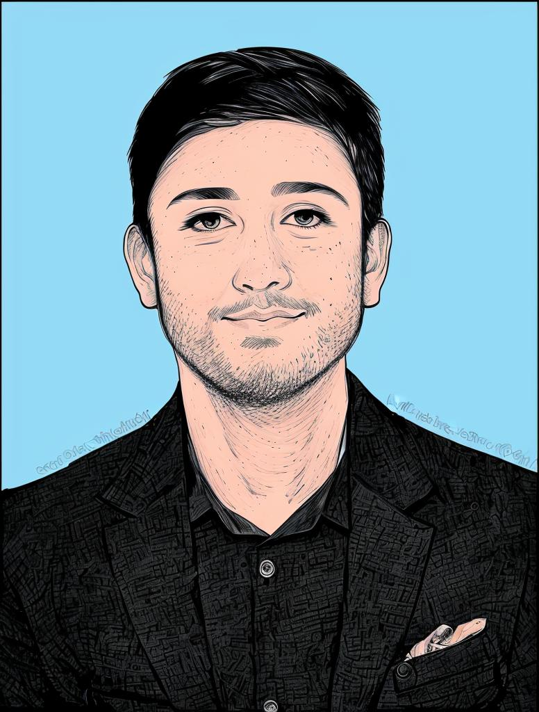

Pranav Kavade Portfolio.exe
C:\Portfolio>
About Me

I’m Pranav Kavade, a passionate CS undergraduate with a relentless drive for building impactful technology solutions. My fascination with technology goes beyond just learning— I’m dedicated to creating innovations that leave a lasting impact on social life .
Whether it’s building unique projects or exploring cutting-edge tools, I thrive in environments where I can push the boundaries of what’s possible. As a tech enthusiast, I’m constantly seeking out challenges that allow me to turn creative ideas into reality, solving real-world problems and making meaningful contributions to society.
Contact me
Mobile No :9168823863
Email: pranavkavade777@gmail.com
Github
Journey
My journey in technology began during my early college years, where I honed my skills by building websites, including clones of well-known platforms like Apple and Amazon. This hands-on experience laid the foundation for my growth in web development. As my skills matured, I ventured into freelancing, where I successfully created websites for commercial businesses, reaching over 10k+ users.
Being a part of the Microsoft Learn Student Club (MLSC) as a technical member further enhanced my learning, exposing me to collaborative projects and open-source contributions. Later, I gained professional experience through an internship at Confexo International, where I worked as a Full-Stack Developer, building scalable solutions. Additionally, I was a finalist in the prestigious Google Hackathon, where my team tackled a complex problem statement with innovative solutions . This journey has shaped me into a problem-solver, ready to create impactful technology.
Achievements
Coding Competition Winner – Won the university coding competition, showcasing my skills in algorithmic problem-solving.
Open-Source Contributor – Made meaningful contributions to open-source projects under the Microsoft Learn Student Club (MLSC).
1st Place in CodeNinjas, Symbiosis University – Ranked 1st out of 25 teams in the competitive CodeNinjas hackathon.
Ranked 4th in NIT Roorkee Hackathon – Achieved 4th position in this prestigious nationwide hackathon.
Commercial Web Development – Developed a website for a school business, successfully supporting over 10k+ users.
Full-Stack Developer Internship – Interned at Confexo International, contributing to key projects as a Full-Stack Developer.
Resume
Download My Resume